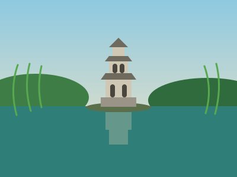
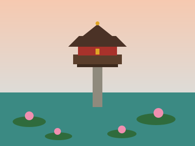

Hồ Hoàn Kiếm và Tháp Rùa
Trái tim của thành phố, nơi người dân đi bộ, tập thể dục và ngắm hồ vào sáng sớm.
Bốn nơi này nằm gần nhau trong nội thành, đi bộ hoặc đạp xe đều tiện.

Trái tim của thành phố, nơi người dân đi bộ, tập thể dục và ngắm hồ vào sáng sớm.

Trường đại học đầu tiên của Việt Nam, xây từ năm 1070 để thờ Khổng Tử.

Ngôi chùa có kiến trúc hình bông sen nở, dựng trên một cột đá duy nhất.

Các ngõ nhỏ đầy cửa hàng, quán ăn và nhà mái ngói cũ.